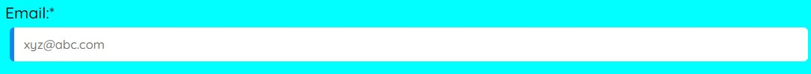

Aim:
Explore the functionality and uses of web browsers in Web Technology which is helpful in designing and debugging.
Theory:
Web Browser: A web browser (commonly referred to as a browser) is a software application for retrieving, presenting, and traversing information resources on the World Wide Web (also known as the internet or the Net). The most popular web browsers are Google Chrome, Microsoft Edge (formerly Internet Explorer), Mozilla Firefox, and Apple’s Safari.
Tools and their functionalities used for web designing and debugging:
1. Styles :
This tool is used to view and change styles of web pages. We can view an element's CSS, add a CSS declaration to an element,add a CSS class to an element, add a pseudostate to a class, change the dimensions of an element, change background colors.
1.1 Change background color:
Before:
After:
1.2 Change default text:
Before:
After:
2. Toggle Device Toolbar:
We use Device Mode to approximate how our page looks and performs on a mobile device. Device Mode is the name for the loose collection of features in Chrome DevTools that help you simulate mobile devices. These features include:
- Simulating a mobile viewport
- Throttling the network
- Throttling the CPU
- Simulating geolocation
- Setting orientation
Before:
After:

3.Computed:
The content in the Computed tab is important because it shows us the values that the browser is actually using on the rendered website. If an element isn’t styled how you think it should be, looking at its computed values can help you understand why.
Conclusion:
Functionality of web design and debugger tools have been studied and explored successfully.